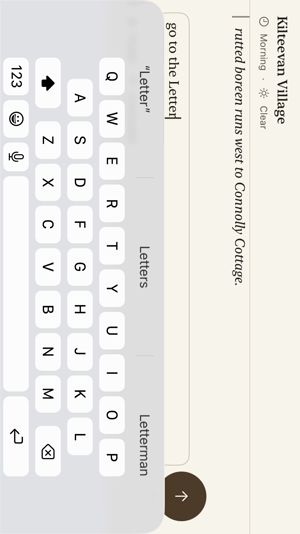
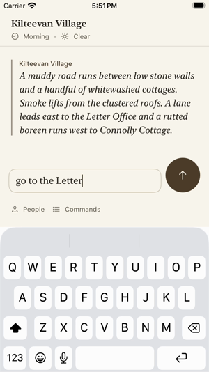

Fixes issue #2211. Simulator recordings on the Rundale Phase 1 Small iPhone (iPhone SE 3rd generation, iOS 26.5), running the new UI test testTurningThePhoneKeepsThePortraitComposerAndDraft on the embedded engine with the mock Endpoint. Not physical-iPhone validation.
The test types a draft with the keyboard up, turns the phone to landscape left, then landscape right, finishes the draft, sends go to the Letter Office, and turns the phone back.
The phone is turned during the middle of the recording. The layout, the draft and the controls do not move, and travel succeeds once.
The same test on the old build fails its first check (window 667 wide by 375 tall). The simulator records its screen in portrait, so the landscape layout appears sideways: the transcript is a strip beside the keyboard.

